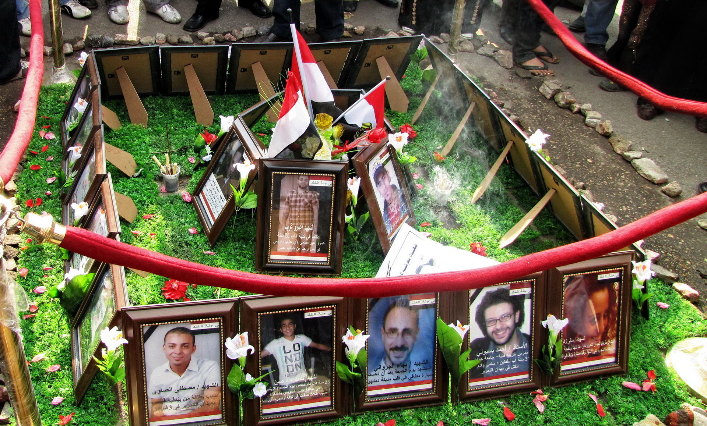
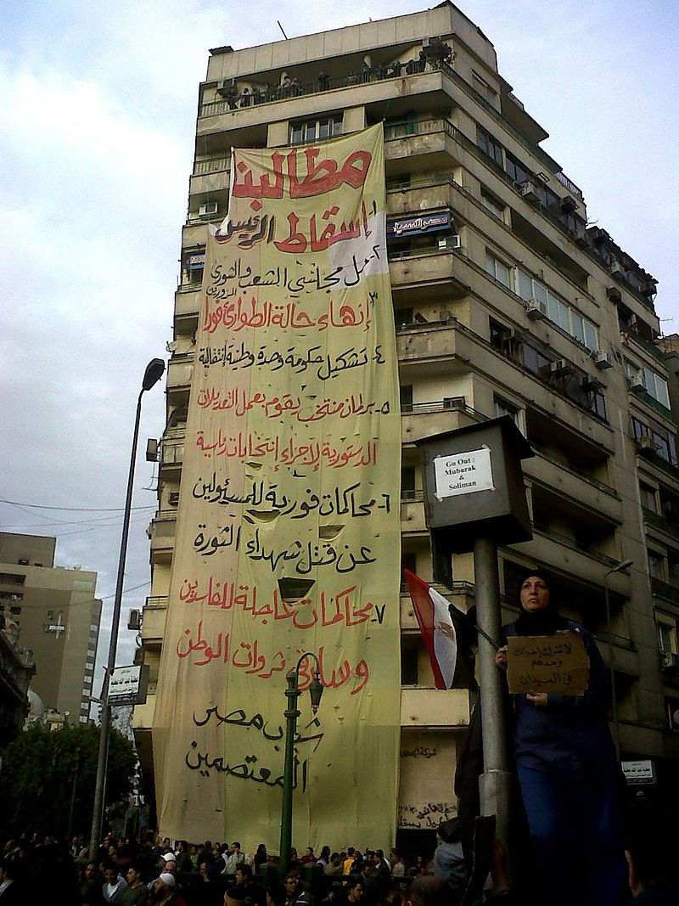
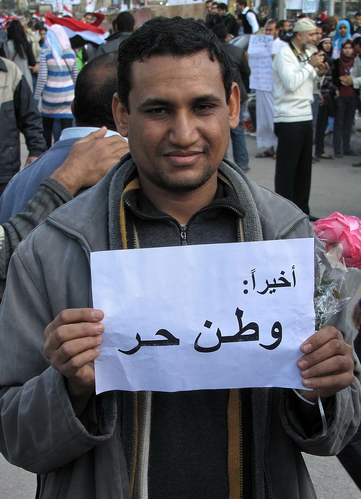
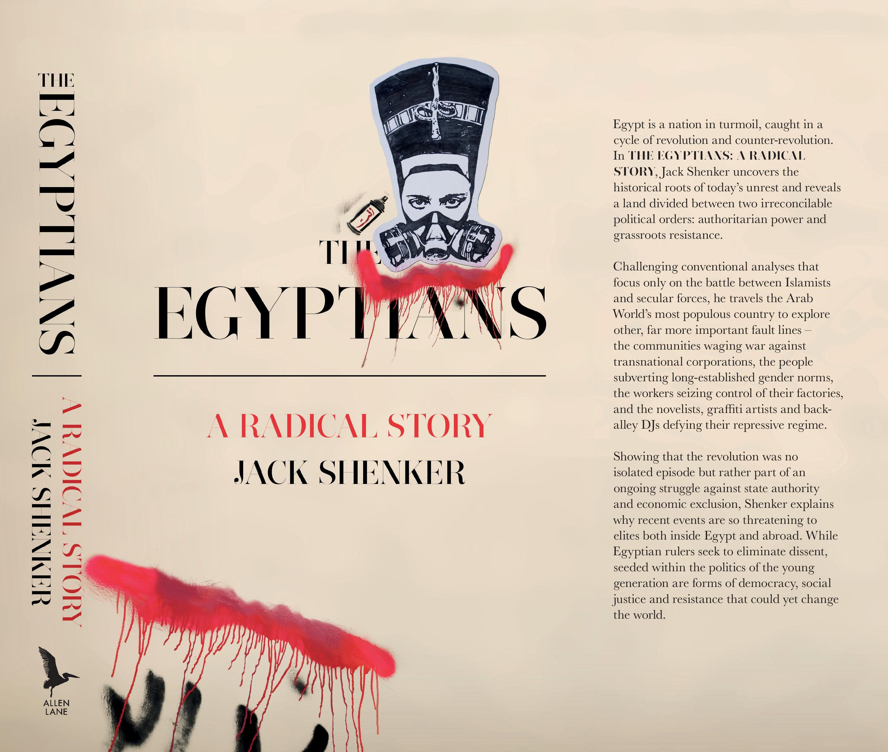

أحدث الأخبار
- الموازنة الجديدة وحل اتحاد الكرة واحتياطي القمح.. أبرز العناوين
- الزمالك يكتسح رينجرز النيجيري بأربعة أهداف مقابل هدف وحيد
- القضاء الإداري يقضي بحل اتحاد الكرة وبطلان الانتخابات الأخيرة
- مقتل 3 أشخاص وإصابة 3 آخرين في حادث مروري بالبحيرة
- وزير الخارجية يجري اتصالاً مع رئيس المجلس الرئاسي الليبي
- عاصمة مصر تتجه لزيادة سكانية نصف مليون العام الجاري
- باولو يقود هجوم الزمالك أمام رينجرز في دوري الأبطال
- المالية تعفي المطاعم غير السياحية من ضريبة القيمة المضافة بشروط
كتاب بريطاني: الثورة المصرية أطلقت إرادة قد تغير العالم
صورة لأحد ثوار 25 يناير يتصدى لسيارة تابعة للشرطة المصرية- موقع ويكيبيديا
قال كتاب بريطاني صدر حديثا إن مصر ربما تبدو اليوم مثالاً مأساويًا لكيفية فشل الاحتجاجات الحاشدة.لكن اضطرابات السنوات الخمس الماضية، منذ تظاهرات ميدان التحرير، أطلقت إرادة للتغيير ومقاومة السلطة بين المواطنين العاديين، قد تؤدي في النهاية إلى حدوث تحوُّل في هذا البلد، وربما العالم أجمع.
وفي مقال بصحيفة الجارديان البريطانية، اعتبر جاك شانكر مؤلف كتاب "المصريون: قصة راديكالية" أنه قد أُسئ فهم الثورة المصرية.
ويُعتبر جزء كبير من سوء الفهم هذا متعمدًا. فقد قامت النخب داخل وخارج مصر بطريقة خادعة بتأطير الفوران الذي بدأ في 25 يناير 2011، والذي وسوف يستمر لسنوات قادمة. وكان هدف هؤلاء إضفاء حالة من الطهارة على الثورة وتجريدها من إمكانياتها الجذرية.
وخلال نصف العقد الماضي، اجتاح البلد العربي الأكبر سكانًا اضطراب استثنائي، لأن الملايين من الناس العاديين اختاروا رفض الوضع الراهن، وحاولوا بناء بدائل.
ولم يكن نضالهم -ضد الإقصاء السياسي والاقتصادي وعنف الدولة المطلوب لفرض هذا الإقصاء- منفصلاً عن النضالات التي كانت تحدث في مناطق أخرى من العالم، بما فيها بريطانيا، وأمريكا وعبر الشمال العالمي بل أن النضالين كانا مرتبطين بقوة. ذلك أنه يقع في قلب الاضطراب المصري نظم للحكم أعادت هيكلة حياتنا جميعًا، وأنماط للمقاومة يمكنها في نهاية المطاف تغيير هذه النظم.

وأضاف المقال في عرض للكتاب أنه خلال السنوات الخمس الماضية، كانت العناوين الخاصة بمصر مفعمة بالعواطف، حيث الهلع من الانتفاضة ضد أحد الحكام المستبدين في الشرق الأوسط، ثم الفرحة بالنجاح، ثم الالتباس بعد ذلك، والحزن لأن المحتجين من الشباب بدا أنهم هُزموا في نهاية المطاف، حيث تم الانقلاب على الانتخابات، وعاد الحكم المطلق مرة ثانية.
وفي بعض الأحيان، بدلاً من أن تكون الأحداث في مصر مصدرًا للإلهام السياسي، كانت بمثابة كتاب دراسي يبين لماذا يكون من المحتوم فشل الاحتجاجات الكبيرة. لكن هذا الطرح يُعتبر مضللاً، لأن الثورة والثورة المضادة لم تكونا قط متعلقتين بمبارك أو خلفائه أو الانتخابات فحسب. إنها ليست مجرد حرب أهلية بين الإسلاميين والعلمانيين، أو نزاع بين التخلف الشرقي والحداثة الغربية الليبرالية. كما أنها ليست "حدثًا" يمكن تثبيته وتقييده داخل الزمان أو المكان.
ففي واقع الأمر، أن الثورة مسألة تتعلق بالمواطنين المهمشين الذين يشقون طريقهم إلى الحلبة السياسية، ويمارسون السيادة الجماعية على مجالات كانت مغلقة أمامهم في الماضي. وبينما تعتبر رئاسة الدولة واحدة من هذه المجالات، فإنه توجد مجالات أخرى كثيرة، مثل الحقول والحضر، والموارد الطبيعية الموجودة في الصحراء وفي قاع البحر، والمنازل التي يعيش الناس فيها، والطعام الذي يأكلونه، والماء الذي يشربونه.

وخلال عقود كثيرة مضت، كانت الكثير من هذه الساحات مغلقة ومخصصة للمكاسب الشخصية، عبر المذهب النيوليبرالي الذي يرى أن السوق هي أفضل من يدير جميع السلع.
وبالرغم من الانتكاسات العديدة التي تعرّض لها الثوريون المصريون، فقد استطاع هؤلاء تعطيل العلاقة الظالمة بين المواطَنة المصرية وبين الدولة، والربط بين الظلم السياسي والاقتصادي، والمطالبة بالإدارة الديمقراطية للأمور التي تؤثر على حياتهم.
ولم يكن اللاعبون الرئيسيون في هذه العملية هم القادة السياسيين من أمثال مبارك أو رئيس المجلس العسكري المشير حسين طنطاوي، أو الرئيس المنتمي للإخوان المسلمين محمد مرسي، أو عبد الفتاح السيسي، قائد الجيش الذي أطاح بمرسي. أي أعضاء النخبة والنخبة المضادة الذين تصارعوا على السيطرة وسط الفوضى. بل كان اللاعبون الرئيسيون هم المصريين العاديين الذين يناضلون من أجل محاولة تفكيك السلطة التي تقف وراء هذه السيطرة.
وقد بدا هؤلاء مختلفين تمامًا عن أولئك الذين ظهروا في التليفزيون أثناء الانتفاضة الأصلية ضد مبارك. فقد كانوا رجالاً ونساء يقطنون بعيدًا جدًا عن التحرير؛ كانوا مزارعين يحتجون على خصخصة أراضيهم، وآلات دي.جي تخلق نوعًا مختلفًا من الموسيقي في جراجات الشوارع الخلفية، وعمال مصنع سيراميك يخطفون مديرهم ويسيطرون على المكان، وبدوًا يقتحمون موقعًا نوويًا حكوميًا لاسترداد أرضهم المسروقة، وتلاميذ مدارس استخدموا فترة الراحة في لعب ألعاب الثورة في زاوية دهشور. ونادرًا ما تجد قصص هؤلاء طريقها إلى وسائل الإعلام المصرية. لكن داخل هؤلاء يكمن تهديد الثورة وإمكاناتها.

علاقة طفل وأبيه
وقال المقال إنه بالرغم من أن الدولة الناصرية استطاعت تقديم الأمان المادي لقسم كبير من السكان، إلا أنها كانت تستند إلى نمط أبوي سلطوي، حيث كانت الشريحة العليا من المؤسسة العسكرية تتولى الحكم لمصلحة الجميع، وكان تفترض أن يكون الجميع ممتنين لسخاء هذه المؤسسة.
وكما كان عليه الحال في ظل الاستعمار، لم تكن هناك مساحة للمشاركة الشعبية أو المعارضة. وخلال العقود التالية، عندما تُوفي عبد الناصر وخلفه آخرون، ظل استبعاد معظم المصريين من السياسة على حاله. فكان يمكن للناس التوسل للحصول على تنازلات، كما يتوسل الطفل لأبيه، لكنه لم يكن مسموحًا لهم قط التدخل في المجالات التي تسيطر عليها الدولة.
وعندما تولى مبارك السلطة، ظل النظام مفتقرًا إلى الديمقراطية، لكن الدولة لم تعد معنية بتوفير الأمان المادي للسكان، بل كانت مهتمة بتحويل المزيد من الأصول الاجتماعية إلى مزايا مالية لأصحاب النفوذ.
وفي سنة 1991، وقّع نظام مبارك اتفاق التكيف الهيكلي مع المؤسسات المالية الدولية المعنية بتطبيق التعويذة النيوليبرالية ـ التوازن واللبرلة والخصخصة. وفي غضون التسعينيات والعقد الأول من الألفية، باعت الحكومة المصرية مئات المؤسسات العامة -غالبًا بسعر يقل عن سعر السوق- إلى اتحادات استثمارية غالبًا ما كان حلفاء مبارك شركاء فيها. وتراجع الأمان الاجتماعي وحقوق العمال وكذلك مستويات المعيشة.
واعتبر المقال أنه بمعان كثيرة، كان الاحتضان القوي لأصولية السوق متناسبًا مع جوهر فلسفة الدولة المصرية، حيث كان الاثنان يستندان إلى مفهوم للحكم يتركز في أيدي سلطة بعيدة عن الرقابة الشعبية، وفي أيدي تكنوقراط يُفترض أنهم يحكمون لمصلحة الشعب. وكان مهمًا بالدرجة نفسها وجود جهاز أمني قوي كي يستطيع الحكام حماية سلطتهم في مواجهة أية مقاومة.
وأنفقت الدولة على وزارة الداخلية، العنصر الأساسي في النظام الأمني، أكثر مما أنفقت على الصحة والتعليم معًا.
وفي ظل اتساع الفقر نتيجة للإصلاحات الاقتصادية، أصبحت الحاجة لجهاز الأمن حيوية من أجل تسهيل فتح مجالات جديدة يمكن للأثرياء أن يتربحوا منها، وكذلك من أجل قمع المعارضة من أسفل.
ومع ظهور الإضرابات والمعارضة المطالبة بالديمقراطية في العقد الأول من الألفية، أصبح المحتجون هدفًا للترهيب والتعذيب من جانب الدولة.

حالة سيولة
ورصد الكاتب أنه في الخارج، أشادت القوى الغربية بهذه التغيرات. وفي الوقت السابق على الثورة، وصف صندوق النقد السياسة الاقتصادية المصرية بأنها "حصيفة"، و"مثيرة للإعجاب".
وبدوره، اعتبر البنك الدولي مصر "على قمة الدول التي تقوم بالإصلاح في الشرق الأوسط" لثلاث سنوات على التوالي.
وجعلت الولايات المتحدة من مصر شريكًا أساسيًا في "الحرب على الإرهاب" واستخدمت البلاد كقاعدة مركزية لبرنامج وكالة المخابرات المركزية الأمريكية الاستثنائي لنقل المتهمين، الذي كانت الولايات المتحدة تنقل من خلاله متهمين بالإرهاب إلى دول أخرى كي يتم تعذيبهم لحسابها.
وكانت نتيجة ذلك أن المساعدات الأمريكية إلى مصر كانت أكبر من نظيرتها إلى أية دولة أخرى فيما عدا إسرائيل.
وعندما اندلعت الثورة، كانت الدولة غارقة في أزمة لم يسبق لها مثيل. واستطاع المصريون لفترة، في ظل الاختراقات التي حدثت في آليات الإقصاء، القفز فوق دفاعات الدولة والتسلل إلى أعماقها.
فقد تم حرق أقسام البوليس واستعادة المجال العام، وعادت إلى السطح قضايا فكرية كان يُعتقد أنها قد حُسمت منذ زمن، مثل الادعاء بأنه "لا يوجد بديل" للنظام القائم. وكان أحد نتائج ذلك حدوث تحول نفسي قَلب رأسًا على عقب المفاهيم التقليدية حول شرعية السلطة.
ولم تكن الدولة، بجهازيها الاقتصادي والعسكري قادرة على تحمل هذه التغيرات، وبالتالي بذل المرتبطون بالنظام القديم كل ما في وسعهم خلال السنوات الخمس الماضية لاستعادة هذا النظام.
فقاموا في البداية بتبني خطاب الثورة، وضحوا ببعض الوزراء، وأطلقوا موجات من الإرهاب لترويع السكان وإجبارهم على الإذعان.
وبالفعل نجحت الكثير من هذه الإجراءات، على الأقل في الأجل القصير. واليوم، تجد أنه قد تم التراجع عن العديد من المكتسبات التي صاحبت الموجة الأولى من الثورة. لكن الانقسام بين من يتمسكون بالطريقة السابقة في الحكم وبين من يرفضونها لا يزال قائمًا.
وعلى هذا الأساس ينقسم المسلمون، وكذلك المسيحيون، والفنانون، والكُتاب والمثقفون والنقابيون، والذين يستخدمون وسائل التواصل الاجتماعي، والذين لا يستخدمونها، والفقراء والأغنياء...إلخ. وأصبحت مصر الآن تعيش حالة من السيولة، حيث تنبثق المواطنة الديمقراطية على نحو عشوائي من داخل الدولة الاستبدادية التي ترفض أيه إمكانية لهذا الوجود الديمقراطي.
وقال المقال إنه بالرغم من أن الكثير من الثوريين المصريين يقفون اليوم خلف القضبان، فإن الفكرة التي باتت ترى في الثورة تغييرًا عميقًا في القوة والسلطة، وليس مجرد تغيير في الرموز، أصبحت أقوى من قدرة الدولة على هزيمتها.


تعليقات الفيسبوك